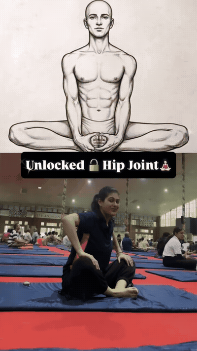
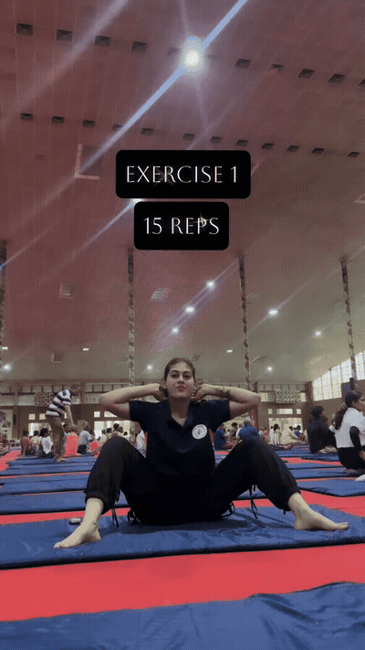
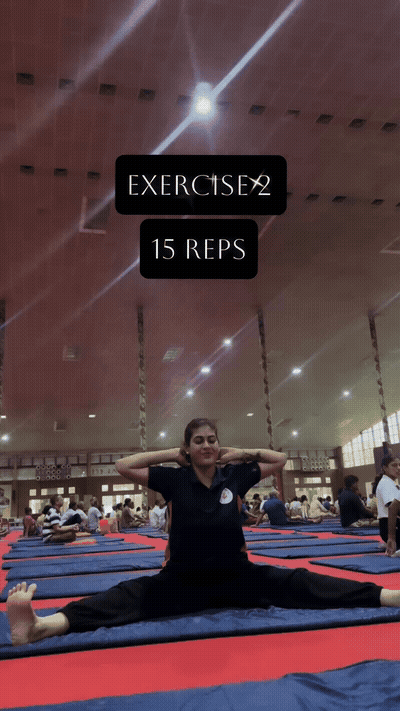
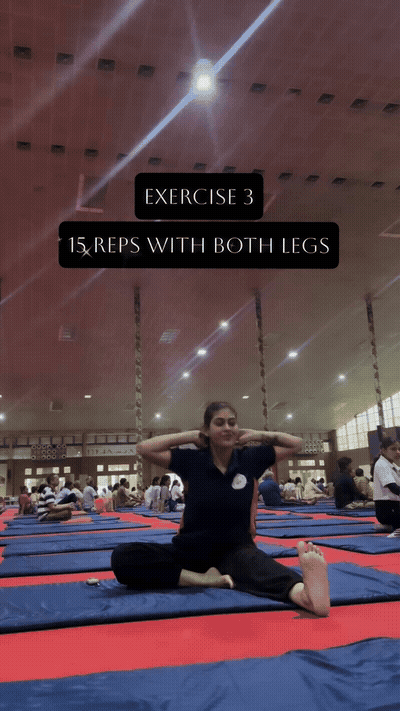
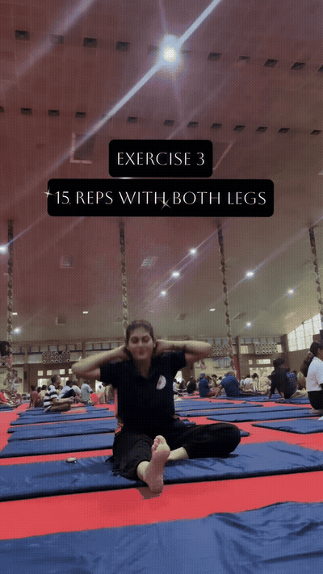
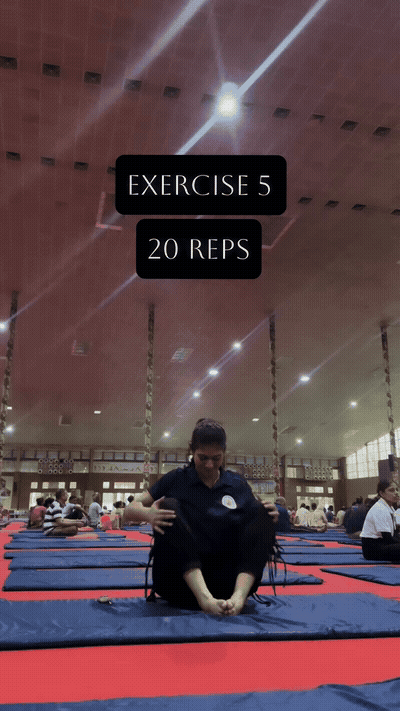

Use the seated/reclined butterfly-style opening shown in the reel. Move the knees or hips through a controlled range rather than bouncing into the groin.

Sit in a wide-leg straddle and reach side-to-side as demonstrated. Keep the movement active and lengthen through the torso instead of collapsing.

With one leg extended and the other bent, reach toward the extended side as shown, then repeat on both legs.

From a butterfly position, fold forward through the hips and return with control. Use a smaller range if the back rounds aggressively.

Balance or support the torso while drawing the knees toward the chest, then return with control. The source shows a seated knee-tuck position rather than a sustained hold.

Extend one leg and bend the other as shown, holding or reaching toward the bent-leg foot/shin. Repeat the movement with both legs.